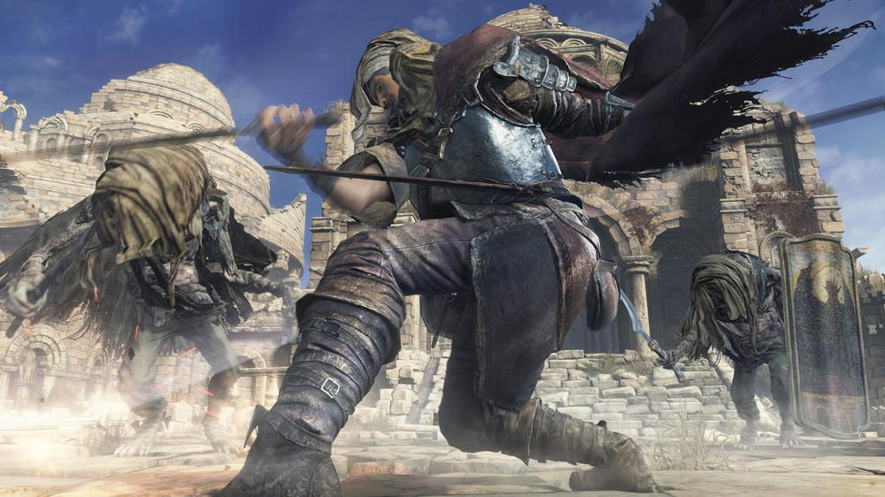
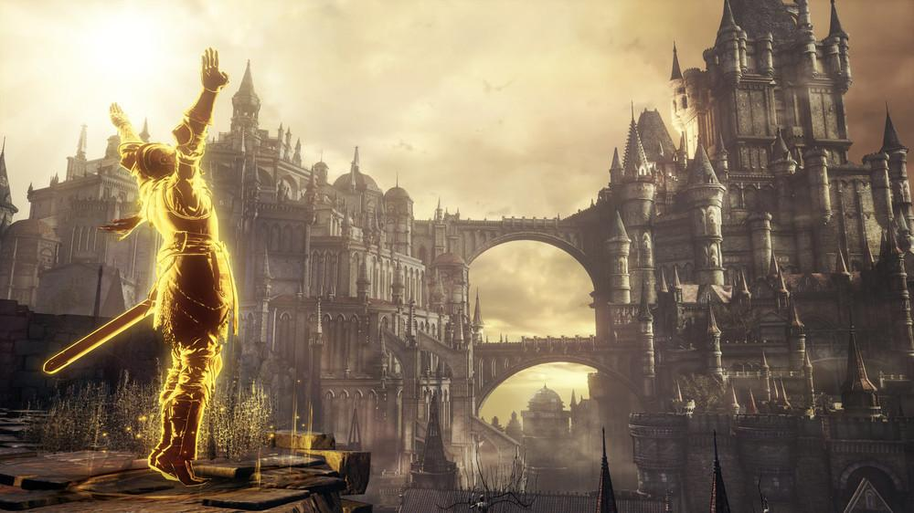

Prior to FromSoftware's Souls series, few gamers would be able to tell you who Hidetaka Miyazaki was. Heavily involved with the Armored Core franchise in the mid-noughties, the Shizuoka-born game director ultimately found fame through 2011's Dark Souls and its sleeper-hit predecessor of two years earlier, Demon's Souls. He's since supervised 2014's Dark Souls II and steered 2015's Bloodborne from concept art to classic status. And 2016 sees Miyazaki return to directing duties for Dark Souls III, the most anticipated of the Souls series titles so far.
Having played some of Dark Souls III, it's exactly how you might expect it to be, given the precedent set by previous series entries. The ruined gothic fantasy setting coupled with a notoriously harsh (but fair) approach to combat gave gamers what they wanted on prior adventures, and the landscapes seen in this new project aren't so distant from those we've died in, over and over again, before now.
The element of surprise, though, has gone—Dark Souls III, in the builds experienced thus far, isn't deviating too much from the tried-and-tested formula of fight effectively or be slain horribly. But then, if it's so very far from broken, why risk compromising one of the Souls series' greatest traits, just to open it up to less-committed gamers? Dark Souls is supposed to be tough, and Dark Souls III is just that. And a little familiarity might just have been what its makers had in mind.
"Particular areas, notably at the beginning of the game, are 'classic' to the franchise," Miyazaki tells me, at a preview event held in Hamburg, Germany. "We've made it to resemble what players may have seen in the past." And so it plays out: red dragons, maidens with unspeakable power. Seen it, done it, got the blood-stained T-shirt, thanks. So what's new, here?
"As you progress through the game, players will see the development of an 'end of days,'" Miyazaki explains. "This is evoked through the sadness and melancholy of enemies in the world. We will be featuring a variety of new enemies, while still keeping memorable ones from earlier installments."
Some areas that we visit, notably The High Wall of Lothric, look noticeably brighter than previous areas explored in the Souls series. The palette was first filled with yellows and browns, moving on to unrelenting hues of purple and red in 2015's Bloodborne. Dark Souls has always been about fading flames, but Miyazaki clearly has different ideas in mind for Dark Souls III's aesthetic direction.
"The main concept of Dark Souls III is the first flame and its successors; the world has been in this cycle of reigniting the flame since the first game, but now it seems to be disappearing, almost dying. We're trying to draw out the aspects of this withering flame. We have also changed the game's palette to fit into this concept of withering beauty. The colors are more muted and sublime. The levels, dragons, enemies, monsters, and even NPCs still have that sense of dignity.
"We emphasize sadness and loneliness, too, which can be seen in both the environments and life forms within the game. What we want to communicate to the fans is that there's an inherent beauty that can be found within everything, beyond all the withering and decay."
Miyazaki became president of FromSoftware in 2014, meaning that he is in direct control of everything the studio green-lights and goes on to actually produce. Dark Souls III was already in planning before he earned his promotion, and just prior to that, FromSoft was bought by the Chiyoda-based Kadokawa Corporation. There have never been more eyes on the Souls series than there are, right now, in the run up to Dark Souls III. And, every so often, that pressure can lead to divisions within the ranks, even at the highest levels.
In 2015, Hideo Kojima left Konami, a studio he'd enjoyed working with for the best part of 20 years. There'd been growing friction between the Metal Gear Solid director and the Tokyo-headquartered gaming giant, and the drama that preceded his announcement of a new, independent Kojima Productions was very visibly played out in public. That situation makes me wonder if Miyazaki could ever find himself in a similar position, now that Dark Souls is becoming as well loved as the Metal Gear series—which means, naturally, that it's expected to sell in ever-rising numbers.

In 2015, Hideo Kojima left Konami, a studio he'd enjoyed working with for the best part of 20 years. There'd been growing friction between the Metal Gear Solid director and the Tokyo-headquartered gaming giant, and the drama that preceded his announcement of a new, independent Kojima Productions was very visibly played out in public. That situation makes me wonder if Miyazaki could ever find himself in a similar position, now that Dark Souls is becoming as well loved as the Metal Gear series—which means, naturally, that it's expected to sell in ever-rising numbers.
"I don't really know the details of what happened between Hideo Kojima-san and Konami, but at least from my perspective, I feel that there is a certain freedom when it comes to creativity. It's quite obvious that the Dark Souls franchise is reaching a turning point, and I'm happy that I have a greater budget for the third game, as well as the creative freedom to make my own decisions. But if there were some restrictions about what I was creating, I definitely wouldn't want to work on it."
Though its focus is on the Souls series right now, FromSoftware hasn't always been making teeth-grindingly difficult fantasy RPGs. In 2004, the studio put out the fantastically titled, Japan-exclusive Metal Wolf Chaos for the original Xbox console, a mechs-and-more third-person shooter that has since gained a cult reputation with copies trading on eBay for upwards of $150. Miyazaki joined FromSoftware the same year as the game came out, and it's one of his favorite titles the company's put out to this day—and it's also a title that stateside indie publisher Devolver Digital has tweeted interest in porting for modern audiences.
"I really like Metal Wolf Chaos, but it's not my title," Miyazaki says. "You'd have to ask Takeuchi-san (Masanori Takeuchi), who is on our board of directors, about whether or not it can be revived. He's a pretty scary guy who used to be my boss, so I'm not going to speak for him! We can't say anything solid about whether we would do it or not, but if Takeuchi-san wanted to, then it's on the table."
Miyazaki also has fond memories of Otogi: Myth of Demons, a fast-and-furious hack-and-slash affair that FromSoftware released in 2002 (2003 in the UK and US), again only for the Xbox. "Again, it'd be up to Takeuchi-san, but I really want to see a revived version of the Otogi series as well." (The original did receive a sequel—anyone for an HD special edition of both games together?)
"We always look back at our back catalogue for inspiration for new titles," Miyazaki says, "but when it comes to very old things like the King's Field series, I'm concerned about just mimicking the style of what Naotoshi Zin, the founder of FromSoftware, created for the PlayStation original. I would rather not go back to it simply out of respect."
Post-release downloadable content, or DLC, has become a part of the Souls series—Artorias of the Abyss for the first game on console, the Lost Crowns Trilogy for II, and Bloodbourne received its Old Hunters expansion at the end of 2015. I figure, what with Miyazaki sitting right in front of me, I've the perfect chance to pitch some Dark Souls III DLC, relating to a game from his own past. Imagine, if you will, your avatar in gleaming armor, great sword in hand, so many enemies slain—and then taking that character into a gigantic, mechanized version of Demon's Souls' Tower Knight and taking on White Glint. Yep, I'm talking about a Souls-Armored Core crossover. Miyazaki laughs, of course, before answering:
"You know, we actually released a Dreamcast game pretty similar to that concept, named Frame Gride. It's a mix of fantasy and mecha genres, both of which I love working on. I'd love to work on a game that evokes the same themes as anime series like Aura Battler Dunbine and The Vision of Escaflowne, but it would be incredibly difficult to do so. I want to work on a game like that, but other people at FromSoftware would think that would be an impossible idea."
That said, surely if anyone in the industry right now has earned himself a blank check to make whatever game he wants to, it's Miyazaki. So, FromSoft's anime-inspired mecha-fantasy title for 2018 is certain to be announced soon. Probably.
Dark Souls III is released in Japan on March 24 and the rest of the world on April 12. Find more information at the game's official website. Special thanks to Brittney Cruz for her translation work. This interview was conducted at a press event in Germany, with travel and accommodation covered by Bandai Namco Entertainment.